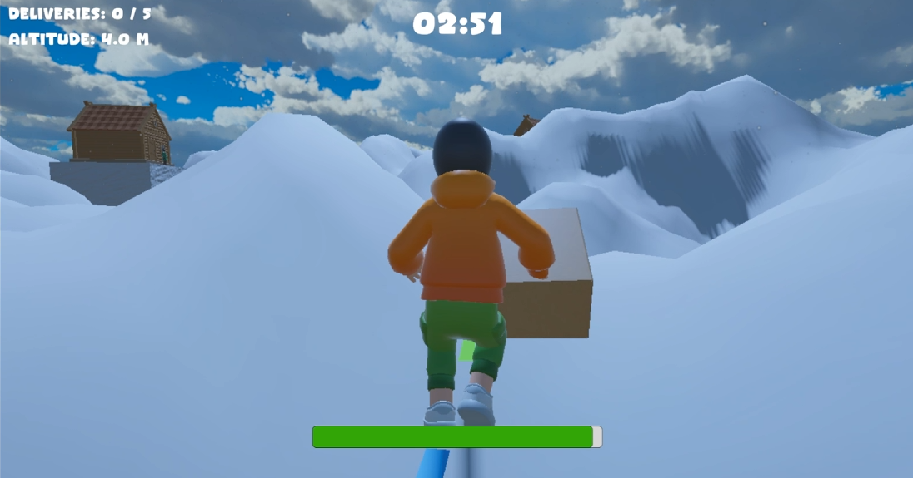
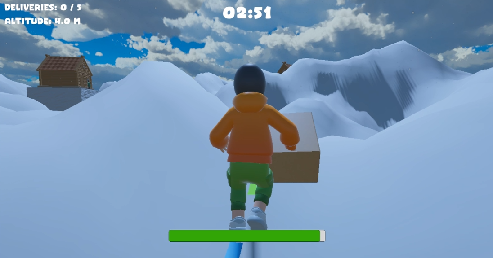
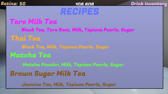
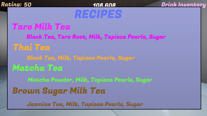

Games
Snow Dash (Unity)
 

Third person package delivery game where the player must navigate mountain terrain while avoiding obstacles and racing against the clock to deliver packages.
Tech: Unity, C#
Play (Web Build) • Gameplay VideoBoba Barista Simulator (Unreal Engine 5)
 

First-person barista simulator built in UE5 using Blueprints and C++. Features recipe systems, timed orders, and inventory management.
Tech: Unreal Engine 5, C++, Blueprints
Itch.io • Gameplay VideoBubble Bots (Phaser)
Based on the TV series Teen Titans Go, This 2D platformer features two unique levels, where players navigate obstacles, avoid or defeat enemies, and race to reach the level's end as quickly as possible.
Tech: Phaser, JavaScript
Play (Web Build)Mage Fight (Unity)
2D top-down Rogue-like/Survival hybrid game. The core pillars of the game are crafting spell casting system using a flexible spell-system, collecting relics, which give the players additional advantages, and fighting against (and defeating) the incoming monsters.
Tech: Unity, C#
Play (Web Build) • Gameplay VideoInfinite World Okinawa Ocean (p5.js)
Creates an infinite scrollable world using procedural algorithms that produce terrain based on seeded randomness. The XXH32 hash function to derive consistent tile values from user input. Also uses p5.js's noiseSeed and randomSeed functions to control variation in the environment.
Tech: p5.js, JavaScript
Play (Web Build)Farm Attack (Phaser)
Farm Attack is a fast-paced endless runner where players use WASD to dodge animals coming from all sides while surviving as long as possible to rack up points.
Tech: Phaser, JavaScript
Play (Web Build)Systematic Metamorphosis (Unity)
Systematic Metamorphosis is 3D walking simulator used to illustrate some of the broader systems we've created to keep us stagnate and from thinking of the inevitable. Utilizes baked and realtime lights with lighting changes. Animated objects, particle systems, and a custom shaders. Uses audio triggers and includes menu and credit scenes.
Tech: Unity, C#
Itch.io • Gameplay VideoMushroom Mutation Prototype (Unity)
A UI based prototype where the player must genome splice two spores to obtain target traits while avoiding negative mutations. Negative are sustained through over-editing traits.
Tech: Unity, C#
Itch.io • Gameplay VideoSpiders Life (Phaser)
Spiders Life is a 2D "endless" runner where players control a spider and must eat insects and play mini-games to survive.
Tech: Phaser, JavaScript
Play (Web Build)